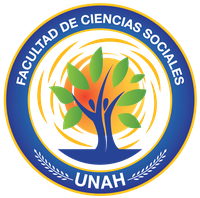
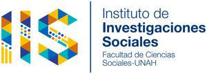
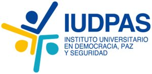
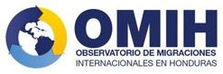
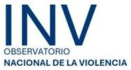
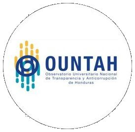

Facultad de Ciencias Sociales, UNAHDel aula al debate nacional.
Dos casas para la investigación, cada una con sus observatorios.

Investigación interdisciplinaria sobre la realidad nacional.
OBSANODUOMIH
Paz, democracia y seguridad ciudadana desde la evidencia.
ONVOUNTAHÁrea de PazÁrea de DemocraciaInformación pública confiable para investigar y decidir.
Qué y cuánto come el país: Precios y situación alimentaria. IIS.
La población en cifras, con la plataforma SISDE. IIS.

La migración hondureña, con enfoque de derechos. IIS.

Muertes violentas y lesiones de causa externa. IUDPAS.

Transparencia y lucha contra la corrupción. IUDPAS.
Dos apuestas de largo aliento.
Renueva los Estudios Generales, la puerta de entrada de todo estudiante a la UNAH. Participan siete asignaturas de la Facultad.
La meta: Que en 2032 los Estudios Generales respondan con pertinencia y calidad a los desafíos disciplinares, curriculares y organizacionales.
Creada en 2022 a petición de la Decanatura. Trabaja en tres frentes: Educación intercultural, patrimonio biocultural y lenguas indígenas.
Busque por institución, país o año.
| Contraparte | Ámbito | Tipo | Año | Documento |
|---|
Investigar con personas exige cuidarlas.
Acreditado por la Vicerrectoría Académica en 2026.
¿Quién investiga y en qué condiciones? Responden 229 docentes (IIS, 2023–2024).
Todo el sitio de la Facultad